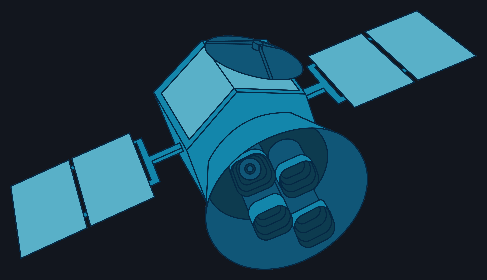
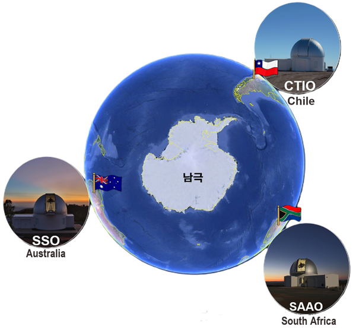

공통 탐구블럭
외계행성 식현상
TESS 공개 관측자료로 밝기 감소를 측정하고 NASA 기준값과 비교합니다.
대표 탐구 질문
별빛 감소만으로 행성의 상대적 크기를 얼마나 신뢰성 있게 추정할 수 있을까?
외계행성 탐구 시작

공통 탐구블럭
성단 색–등급도
측광표에서 색지수와 등급을 계산해 성단의 나이와 거리 단서를 해석합니다.
대표 탐구 질문
색–등급도(CMD)의 모양만으로 성단의 나이와 거리를 어디까지 알 수 있을까?
성단 CMD 탐구 시작

공통 탐구블럭
KMTNet 미시중력렌즈
다지점 광도곡선에서 증광을 확인하고, 행성 아노말리로 외계행성을 찾습니다.
대표 탐구 질문
별이 잠깐 밝아졌다 어두워진 곡선 하나만으로, 보이지 않는 렌즈 천체의 질량과 거리를 어디까지 알 수 있을까?
미시중력렌즈 탐구 시작